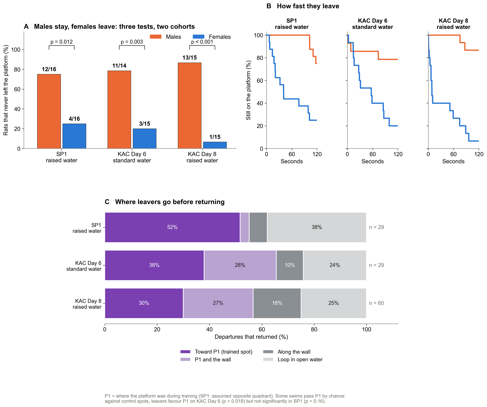

Rats are placed on a hidden platform for 120 s. Most males stay put. Most females scan with their heads, step away, and come back. I trained DeepLabCut models on footage from a 1999 cohort and a current cohort to measure that behavior frame by frame.
Archival cohort, leaving vs staying. Full 120 s at 4× speed. A typical female leaves three times, first at 7.6 s; a typical male never moves.
Females turn their heads faster and make more VTE-like back-and-forth sweeps while still on the platform, in all three tests. When they leave, they head toward where the platform sat during training more than toward control spots.

Poster data, descriptive and still being validated. Full methods, every statistic, and what not to over-read are in the analysis dashboard.
Overtraining and aversive affect as a rat model of OCD-like checking, with sex and individual differences. Poster session Wednesday, November 18.
Relating checking to parvalbumin interneurons and perineuronal nets in striatum, prefrontal cortex, and hippocampus.
Harmonizing public Morris water maze datasets to look for behavior nobody has characterized yet.
Behavioral data workflow with sex as a biological variable.
neuropipesabv.streamlit.app